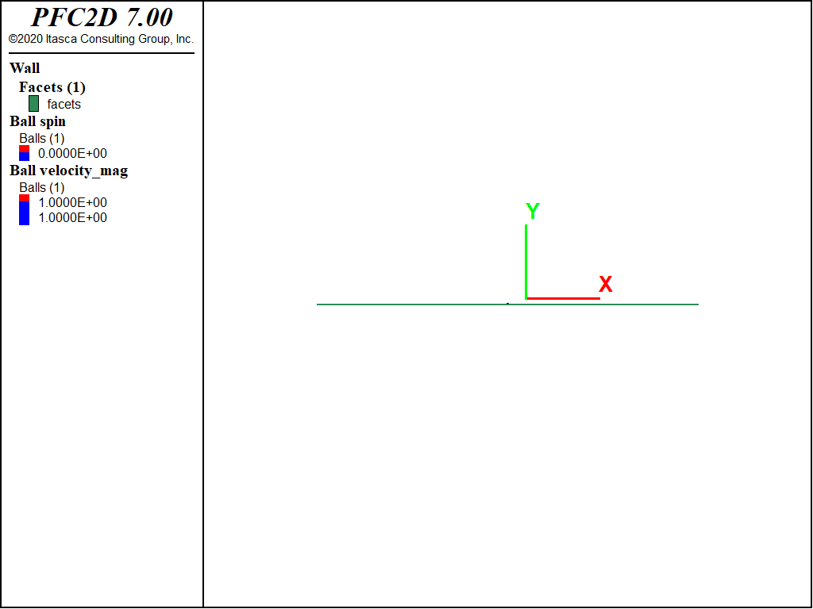
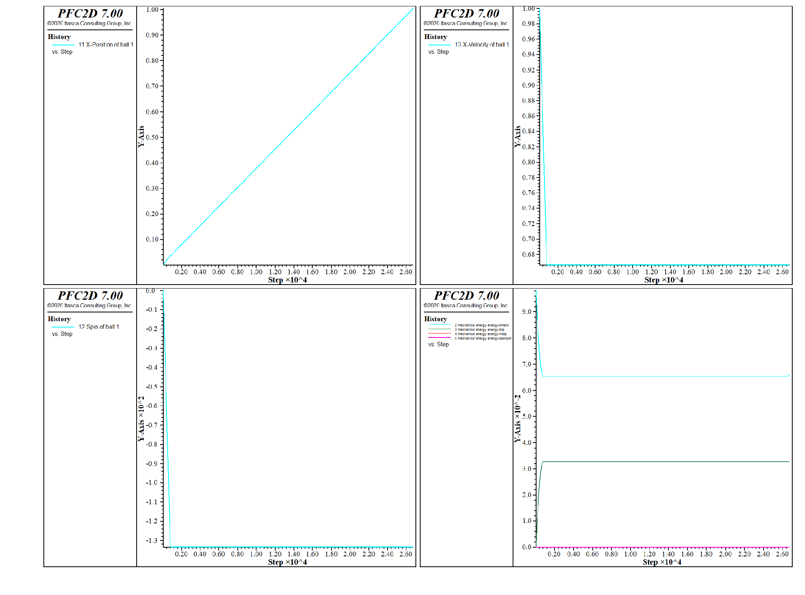
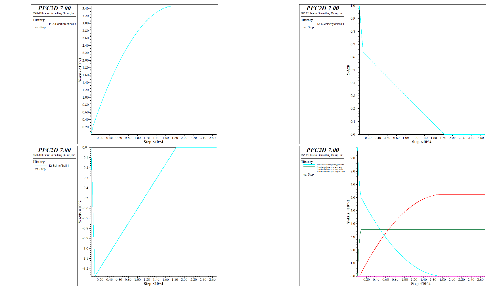
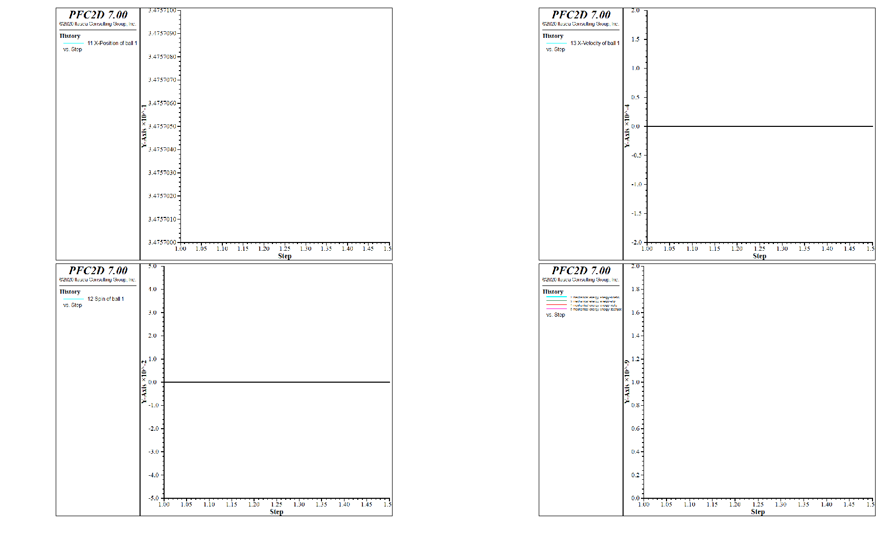
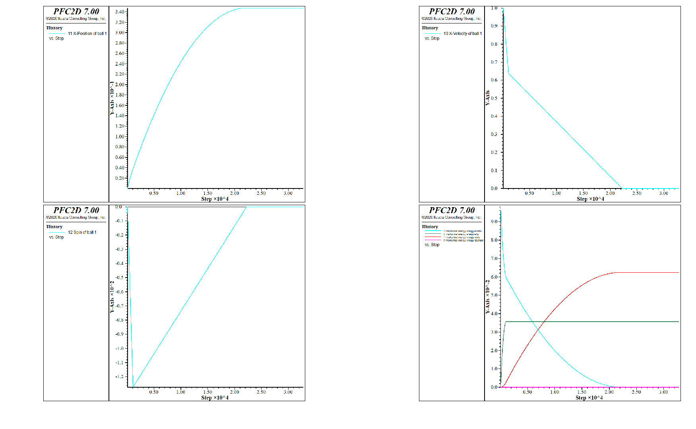
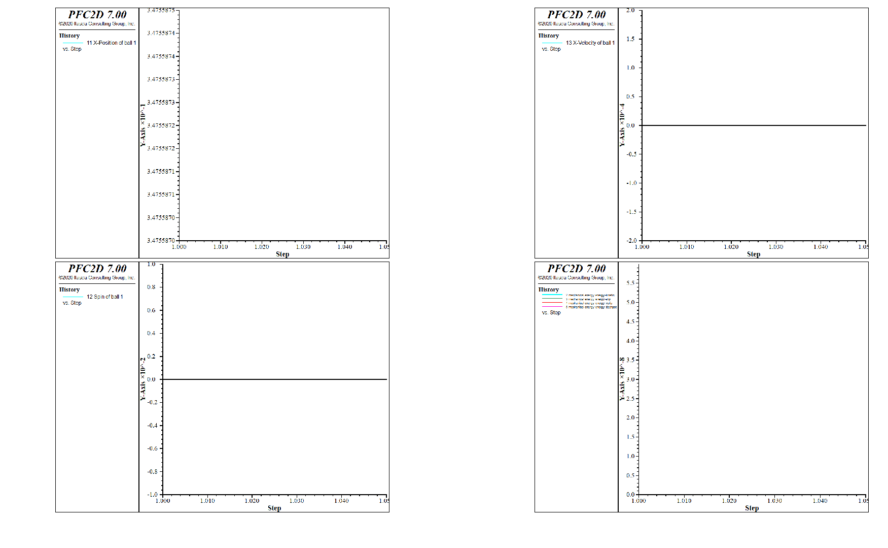
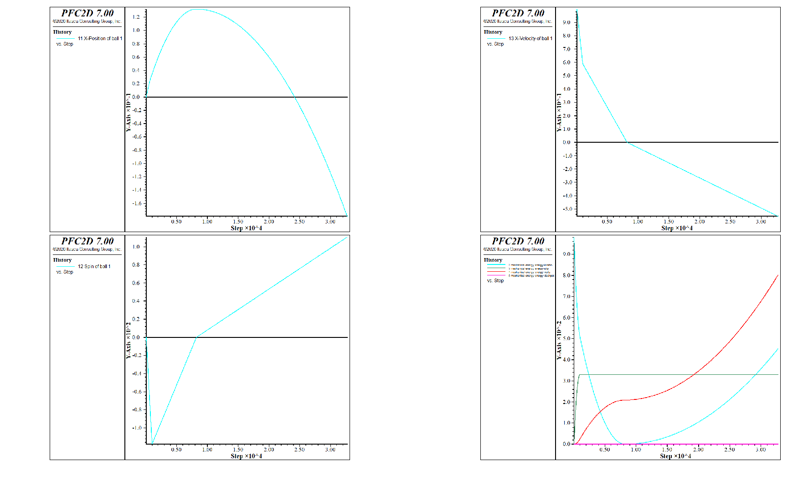
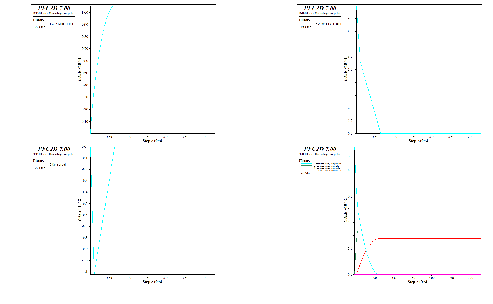

滚动阻力线性接触模型：平面上的单个球颗粒
问题描述
注意
本算例的项目文件可在 PFC 中查看或运行。[1]所用的数据文件（data files）列于本算例末尾。
通过一个简单系统检验 滚动阻力线性接触模型（rolling resistance linear contact model）：系统中只有一个球颗粒，初始在重力作用下静止于平面上。随后赋予球颗粒一个沿平行于表面方向的不为零的初始速度，并将模型循环至所需的力学时间。该设置与 [Ai2011] 和 [Wensrich2012] 中讨论的验证问题类似。共模拟五种情形：
- 在前 3 种情形中，重力垂直于表面（即表面为水平面），并通过改变接触模型属性来展示接触模型的行为；
- 在后 2 种情形中，重力方向发生旋转（即表面倾斜），并讨论滚动阻力系数的影响。
在所有这些情形中，模型均循环至达到 1.5 s 的目标力学时间。
PFC2D 模型
该系统由一个在重力作用下静止于平面上的单个球颗粒构成。初始状态使用文件 make_system.dat 构建，如下所述。
首先，使用以下命令构建系统并循环至平衡：
; 定义计算域范围与边界条件
model domain extent -1.0 1.0 -1e-1 2e-1 condition destroy
; 将 CMAT 的默认槽位设置为使用 rrlinear 接触模型
contact cmat default model rrlinear ...
method deformability emod 1e7 kratio 1.0 ...
property dp_nratio 0.2 dp_mode 3
; 生成体系并在重力作用下稳定
wall generate plane
ball create radius 5e-3 position-y 5e-3
ball attribute density 2500.0
model gravity 9.81
model large-strain on
model solve
请注意，接触模型分配表（CMAT）的默认槽位中填充的是 滚动阻力线性接触模型（rolling resistance linear contact model）。
在开展各测试情形之前，先设置历程监测，并赋予球颗粒 1 m/s 的初始 x 方向速度。
; 设置历程监测
model mechanical time-total 0.0
model orientation-tracking on
model energy mechanical on
history interval 1
model history name "1" mechanical time-total
model history name "2" mechanical energy energy-kinetic
model history name "3" mechanical energy energy-slip
model history name "4" mechanical energy energy-rrslip
model history name "5" mechanical energy energy-dashpot
model history name "6" mechanical energy energy-strain
model history name "7" mechanical energy energy-rrstrain
ball history name "11" position-x id 1
ball history name "12" spin id 1
ball history name "13" velocity-x id 1
ball attribute velocity-x 1.0
model save 'system-ini'
program return
初始系统如 图 1（Fig. 1） 所示。


图 1：初始系统。
水平表面
在水平表面条件下进行三次模拟，并采用不同的摩擦系数与滚动摩擦系数取值。
在第一种情形中，滚动摩擦系数保持为零，而将摩擦系数设为非零值（\(\mu = 0.8\)）。因此，在相同加载条件下，其行为与 线性接触模型（linear contact model） 的行为相同。图 2（Fig. 2） 展示了球颗粒的运动。图中给出了 x 位置（左上角）、x 速度（右上角）、角速度（左下角）的历程，以及动能和摩擦功耗散能量（右下角）随力学时间的历程。由于输入的平动速度较大，摩擦在第一个时步即被完全调动。由此产生的力矩使球颗粒发生转动，同时动能一部分通过摩擦功耗散，一部分转化为转动自由度上的能量。经过短暂的减速阶段后，球颗粒呈现恒定的 x 速度和恒定的自旋。在此阶段，能量不再耗散，球颗粒最终到达域边界。


图 2：模拟过程中监测的历程随力学时间的变化（\(\mu = 0.8\)，\(\mu_r = 0.0\)）。 左上：x 位置，右上：x 速度，左下：自旋，以及左下：能量。
将滚动摩擦系数设为非零值（\(\mu_r = 0.1\)）后重复该模拟。在这种情况下（见 图 3（Fig. 3）），滚动阻力机制乍看之下能够耗散能量，直至球颗粒到达最终的稳定位置。


图 3：模拟过程中监测的历程随力学时间的变化（\(\mu = 0.8\)，\(\mu_r = 0.1\)）。 左上：x 位置，右上：x 速度，左下：自旋，以及左下：能量。
然而，仔细观察历程曲线（图 4（Fig. 4））可以发现，球颗粒围绕某一恒定位置持续振荡。这是因为在此阶段摩擦和滚动摩擦均未被完全调动，因此系统缺乏额外的阻尼机制来消耗剩余的动能。


图 4：模拟过程中监测的历程随力学时间的变化（\(\mu = 0.8\)，\(\mu_r = 0.1\)）。 1.0 s 至 1.5 s 之间数值的局部放大图。 左上：x 位置，右上：x 速度，左下：自旋，以及左下：能量。
现在，在剪切方向取非零临界阻尼比（\(\beta_s = 0.2\)）的情况下重复进行相同的模拟。在此情形下（见 图 5（Fig. 5）），观测到非常相似的行为：滚动阻力机制能够耗散大部分能量，黏性阻尼也会耗散能量，其程度足以使球颗粒达到最终的稳定位置（图 6（Fig. 6））。值得注意的是，最终的稳定 x 位置与无剪切黏性阻尼时系统围绕其振荡的取值很接近，但略低（0.34756m 对比 0.34757m）。


图 5：模拟过程中监测到的历程，随力学时龄变化（\(\mu = 0.8\)、\(\mu_r = 0.1\)、\(\beta_s = 0.2\)）。 左上：x 位置；右上：x 速度；左下：自旋；左下：能量。


图 6：模拟过程中监测到的历程，随力学时龄变化（\(\mu = 0.8\)、\(\mu_r = 0.1\)、\(\beta_s = 0.2\)）。 1.0 s 至 1.5 s 之间各取值的局部放大图。 左上：x 位置；右上：x 速度；左下：自旋；左下：能量。
倾斜表面
另外又进行了两次模拟，通过旋转重力方向来模拟球颗粒初始沿斜坡向上运动的情形，倾角为 \(\alpha=10^{\circ}\)。
对于第一种情形，取 \(\mu = 0.8\)、\(\mu_r = 0.1\) 和 \(\beta_s = 0.2\)。采用这些参数时（见 图 7（Fig. 7）），球颗粒运动至最大距离，随后在重力作用下开始沿斜坡向后滚动。较小的滚动阻力不足以平衡球颗粒所受的力矩，球颗粒便向下加速。


图 7：模拟过程中监测到的历程，随力学时龄变化（倾斜斜坡：\(\alpha=10^{\circ}\)、\(\mu = 0.8\)、\(\mu_r = 0.1\)、\(\beta_s = 0.2\)）。 左上：x 位置；右上：x 速度；左下：自旋；左下：能量。
在第二种情形中，滚动摩擦系数设为 \(\mu_r = \tan \alpha\)。此时滚动阻力机制施加于球颗粒的力矩足以平衡球颗粒因重力荷载而承受的力矩（[Ai2011]），球颗粒不再向下运动（图 8（Fig. 8））。请注意，最终的移动距离略有减小。若系统循环足够长的力学时间，该距离将趋于一个有限的最终值。


图 8：模拟过程中监测到的历程，随力学时龄变化（倾斜斜坡：\(\alpha=10^{\circ}\)、\(\mu = 0.8\)、\(\mu_r = \tan \alpha\)、\(\beta_s = 0.2\)）。 左上：x 位置；右上：x 速度；左下：自旋；左下：能量。
讨论
在本例中，使用一个简单系统来检验 滚动阻力线性接触模型（rolling resistance linear contact model），该系统由单个球颗粒组成，球颗粒初始在重力作用下静止于水平表面上。随后赋予球颗粒一个沿平行于表面方向的非零初速度，并将模型循环至所需的力学时龄。重力加速度方向设为垂直于表面，以模拟水平表面；或设为与表面成一定角度，以模拟倾斜表面。结果表明，当表面为水平时，滚动阻力机制是阻止球颗粒一直滚动到域边界的必要条件。还需要少量剪切黏性阻尼，以衰减球颗粒在最终位置附近的振荡。对于倾斜平面，球颗粒在重力作用下减速；若滚动摩擦系数大于倾角的正切，球颗粒将达到最终位置。否则，球颗粒将达到最大高度，随后沿倾斜表面向下滚回。这些结果与 [Ai2011] 中讨论的结果一致。
数据文件
make_system.dat (2D)
;===========================================================================
; 文件名：make_system.dat（2D）
;===========================================================================
model new
model title ...
'Rolling Resistance Linear Contact Model: Single Ball on a Flat Surface'
; excerpt-izrw-start
; 定义计算域范围与边界条件
model domain extent -1.0 1.0 -1e-1 2e-1 condition destroy
; 将 CMAT 的默认槽位设置为使用 rrlinear 接触模型
contact cmat default model rrlinear ...
method deformability emod 1e7 kratio 1.0 ...
property dp_nratio 0.2 dp_mode 3
; 生成体系并在重力作用下稳定
wall generate plane
ball create radius 5e-3 position-y 5e-3
ball attribute density 2500.0
model gravity 9.81
model large-strain on
model solve
; excerpt-izrw-end
; excerpt-ptwa-start
; 设置历程监测
model mechanical time-total 0.0
model orientation-tracking on
model energy mechanical on
history interval 1
model history name "1" mechanical time-total
model history name "2" mechanical energy energy-kinetic
model history name "3" mechanical energy energy-slip
model history name "4" mechanical energy energy-rrslip
model history name "5" mechanical energy energy-dashpot
model history name "6" mechanical energy energy-strain
model history name "7" mechanical energy energy-rrstrain
ball history name "11" position-x id 1
ball history name "12" spin id 1
ball history name "13" velocity-x id 1
ball attribute velocity-x 1.0
model save 'system-ini'
program return
; excerpt-ptwa-end
;===========================================================================
; 文件结束：make_system.dat（2D）
test_system.dat (2D)
;===========================================================================
; 文件名：test_system.p2dat
;===========================================================================
; 情况 HORIZONTAL-0：无滚动摩擦
model restore 'system-ini'
contact property fric 0.8
model solve time 1.5
model save 'final-horizontal-0.sav'
; 情况 HORIZONTAL-1：摩擦与滚动摩擦
model restore 'system-ini'
contact property fric 0.8 rr_fric 0.1
model solve time 1.5
model save 'final-horizontal-1.sav'
; 情况 HORIZONTAL-2：摩擦、滚动摩擦与阻尼
model restore 'system-ini'
contact property fric 0.8 rr_fric 0.1 dp_sratio 0.2
model solve time 1.5
model save 'final-horizontal-2.sav'
; 情况 INCLINED-1：滚动摩擦小于坡面倾角的正切
model restore 'system-ini'
[theta = math.degrad*10.0]
model gravity [-9.81*math.sin(theta)] [-9.81*math.cos(theta)]
contact property fric 0.8 rr_fric 0.1 dp_sratio 0.2
model solve time 1.5
model save 'final-inclined-1.sav'
; 情况 INCLINED-2：滚动摩擦等于坡面倾角的正切
model restore 'system-ini'
[theta = math.degrad*10.0]
model gravity [-9.81*math.sin(theta)] [-9.81*math.cos(theta)]
contact property fric 0.8 rr_fric [math.tan(theta)] dp_sratio 0.2
model solve time 1.5
model save 'final-inclined-2.sav'
program return
;=============================================================================
; 文件结束：test_system.p2dat
尾注
| [1] | 要在 PFC 中查看本项目，请使用程序菜单。
⮡ PFC |
| 这些内容对您有帮助吗？… | FLAC3D © 2019, Itasca | 原文更新于 2020 年 10 月 8 日 |